Introdução à Edição de vídeo no Blender
A aplicação Blender inclui um editor com as funcionalidades essenciais necessárias à edição não-linear de vídeo.
1- Active o modo de trabalho Video Editing.
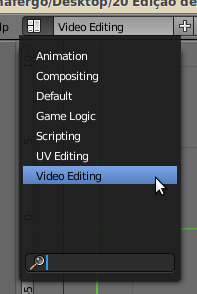2- Adicione 2 clips de vídeo. Através do menu Add > Movie.
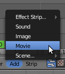3- Adicione um bloco de cor preta através de Add > Effect Strip... > Color
4- Para deslocar uma strip, seleccione com o BDR e clique em G. Quando desloca uma strip (G), surge a indicação do número de frame do início e final da strip. Desloque a strip Color para a frame 1.
5- Coloque um dos clips na frame 15.
6- Coloque o cursor (barra verde) no segundo 2. Se clicar no BER e arrastar o rato tem maior controle e pode fazer scrubbing (arrastar o cursor na linha de tempo). Como temos 24 FPS, o segundo 2 corresponde à frame 48. Na imagem abaixo pode ver a indicação da frame, a linha de tempo e a informação em que segundo +frame (2 +00) se encontra o cursor.
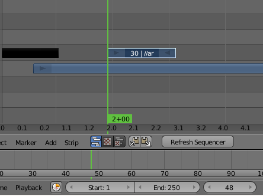7- Seleccione o segundo clip e clique em Shift+S para fazer snap e colocar o segundo clip no local indicado pelo cursor.
8- Seleccione o bloco Color, depois prima Shift e seleccione o primeiro clip de vídeo. Adicione um efeito de tipo Cross (Add > Effect Strip). Irá surgir uma nova strip com a duração da sobreposição entre os 2 blocos seleccionados. Se fizer scrubbing irá ver que acabou de criar um “fade in” de preto para o clip de vídeo. Para aumentar a duração do “fade in” tem de aumentar o tempo de sobreposição. Se clicar em cima da seta do lado direito do bloco de Cor, pode depois deslocar (G) o final desse bloco aumentando a sobreposição e, consequentemente, aumentando o tempo de duração do “fade in”.
9- Coloque o cursor no início do segundo clip de vídeo. No local indicado pela imagem acima.
10- Seleccione o primeiro clip de vídeo e clique em K para criar um soft-cut. Coloque o cursor no final do segundo clip de vídeo, seleccione novamente o primeiro clip de vídeo e clique em K para criar um novo soft-cut. O primeiro clip de vídeo deverá estar dividido em 3 partes. Seleccione a segunda parte, aquela que tem o segundo clip de vído sobreposto, e apague-a (x).
Se reparar bem, apesar de desaparecer a segunda parte, ficaram duas linhas muito suaves no seu lugar. Estas duas linhas correspondem aos dois soft-cuts. A diferença entre soft-cut (k) e hard-cut (Shift+K) reside no grau de destrutibilidade da sua edição. Se tivéssemos feito hard-cuts, o corte seria real e quando apagássemos a segunda parte esta teria desaparecido por completo.
Com os soft-cuts é possível repor o que foi cortado, a eliminação não é real. Se clicar nas setas da primeira e terceira partes pode mover as mesmas (G), tal como fez para o bloco de Cor, repondo frames que foram previamente cortadas. Ou seja, com soft-cuts pode remover parcelas sem ter de apagar por completo.
11- Seleccione o segundo clip e adicione um efeito Glow. Se seleccionar a nova strip do efeito, no lado direito do ecrã surgem diversas propriedades que pode configurar.
No painel de propriedades, lado direito das pistas de vídeo, tem acesso a diversos dados e informações importantes relativas a cada strip (i.e. canal/pista em que está posicionada a strip, duração, etc.).
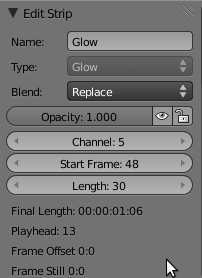Dependendo do tipo de strip (uma strip com um clip de vídeo é diferente de uma strip de efeito e as strips de efeitos são diferentes entre si) existem diferentes propriedades e possibilidades de configuração.
Na medida em que determinam o modo como o conteúdo das pistas sobrepostas interage entre si, são especialmente úteis as opções relativas ao “blend mode” e opacidade.
No painel Filter surgem também outras opções úteis:
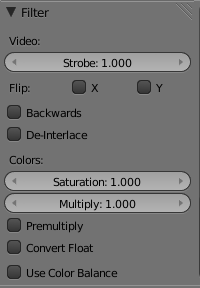Flip X e Y: a imagem da strip é invertida em X (espelhamento) ou Y.
Backwards: a strip é invertida do final para o princípio.
Saturation, multiply, Use Color Balance: permitem correcção de cor.
Por fim, defina a framerate (frames por segundo) que pretende utilizar e a dimensão do output. Seleccione o formato para ficheiro de saída (i.e. AVI, OGG, etc.). Verifique se tem a opção Sequencer activada e clique em Animation para criar o ficheiro de vídeo.
Criar ficheiro vídeo através da sequenciação de imagens fixas (“frames”)
As funcionalidades de edição de vídeo do Blender permitem utilizar esta aplicação para gerar um ficheiro vídeo a partir de imagens fixas, sequenciando as “frames “. Ou seja, o Blender pode ser utilizado para criar um ficheiro vídeo a partir de imagens renderizadas, desenhadas ou capturadas isoladamente (por exemplo, imagens renderizadas em diferentes computadores de uma renderfarm ou capturadas com uma máquina fotográfica para criar animação de tipo stopmotion).
1- Coloque as suas imagens numa pasta única e por ordem. Utilize os nomes para organizar as frames (exemplo: imagem1.png, imagem2.png, etc). Este passo não é obrigatório mas facilita imenso o trabalho!
2- No Blender, active o modo de trabalho Video Editing. Utilize o menu Add e escolha a opção adicionar imagens.
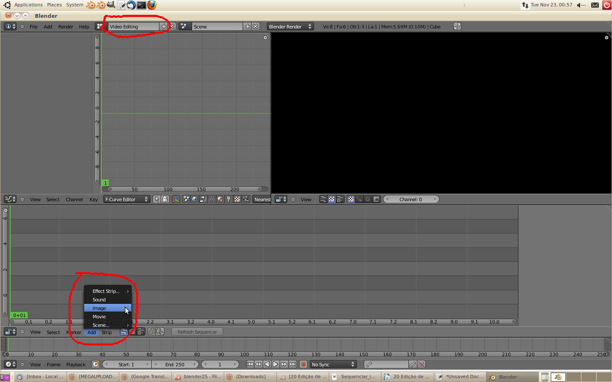3- Navegue até á pasta onde tem armazenadas as imagens. Seleccione as imagens que pretende adicionar e clique em “Add Image Strip”. Pode seleccionar mais do que uma imagem e a tecla A permite seleccionar todo o conteúdo da pasta, permitindo seleccionar todas as imagens e adicionar as mesmas de uma só vez...
4- Coloque o bloco com as imagens seleccionadas na pista vídeo.
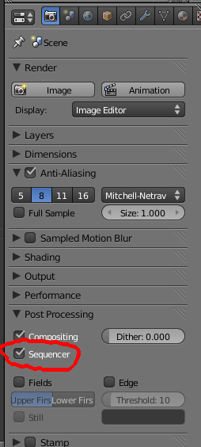5- Defina a framerate (frames por segundo) que pretende utilizar e a dimensão do output. Seleccione o formato para ficheiro de saída (i.e. AVI, OGG, etc.). Verifique se tem a opção Sequencer activada e clique em Animation para criar o ficheiro de vídeo.
Sobreposição de conteúdo 3D
1- Crie uma cena utilizando a técnica apresentada no tutorial 16. Coloque um texto e anime o material (tutorial 9) do objecto de texto. No nosso caso, o título “A aranha” começa transparente, invisível (Alpha 0.000), torna-se visível (Alpha 1.000) e depois volta a ficar invisível. Nas frames 1 e 135, o objecto de texto está com Alpha 0.000. Na frame 135, as duas linhas animadas tabém estão com Alpha 0.000
Ou seja, criámos uma cena com 135 frames que começa com um ecrã a preto na frame 1. Irão surgir duas linhas animadas e depois, quando a animação das linhas terminar, surgem as letras do centro em fade-in (transição de Alpha 0 para Alpha 1). No fim, na frame 135, os três objectos estão em Alpha 0.
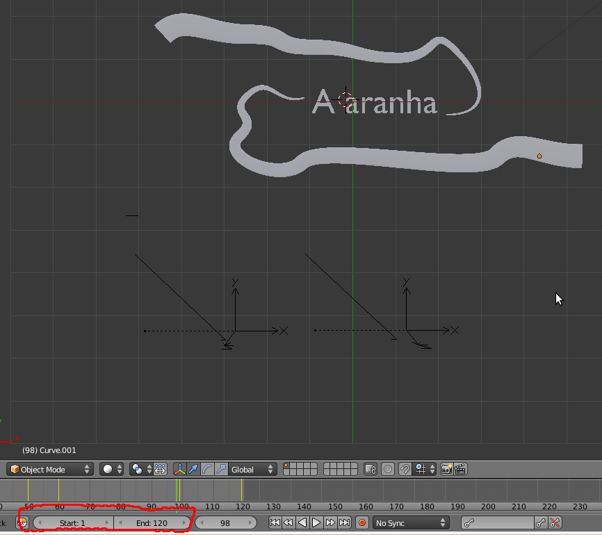2- Active a janela do Node Compositor. Crie uma sequência a seu gosto. Esta configuração de nós vai ser aplicada apenas aos objectos que existem na janela 3D View.
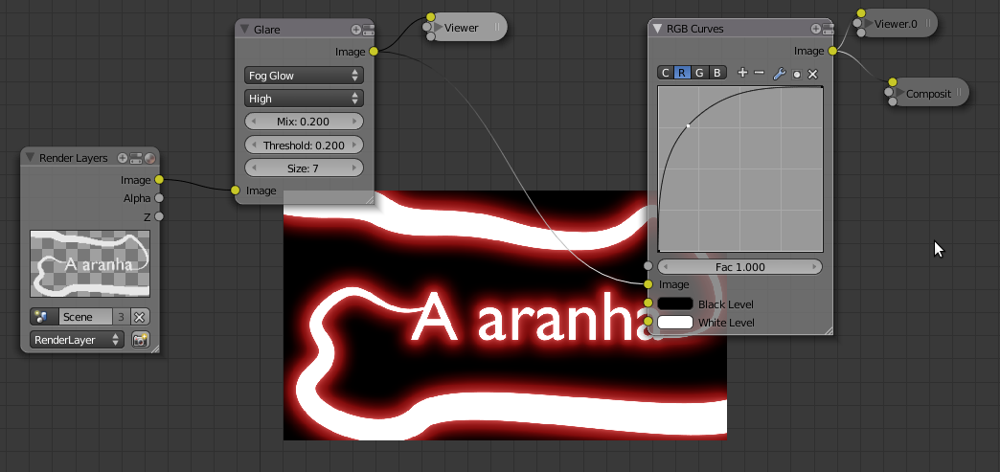3- Certifique-se os seus valores de Start e End são 1 e 135, respectivamente.
4- Adicione uma nova Scene, tipo Empty.

5- Na nova Scene (se não mudar os nomes, a nova Scene deverá chamar-se Scene.001), active o modo de trabalho de Video Editing.
6- Adicione um clip de vídeo (se preferir, pode usar uma imagem fixa). Adicione 2 Effect Strip do tipo Color e 2 Effect Strip do tipo Cross de forma a criar um fade-in no início (transição da 1ª Color para o clip de vídeo) e um fade-out no final (transição do clip de vídeo para a 2ª Color)·
Ajuste os valores de Start e End. No nosso caso (ver imagem abaixo), temos 240 frames, 10 segundos, framerate 24 FPS.
O clip de vídeo foi cortado (Shift+K) de forma a só ter 9 segundos.
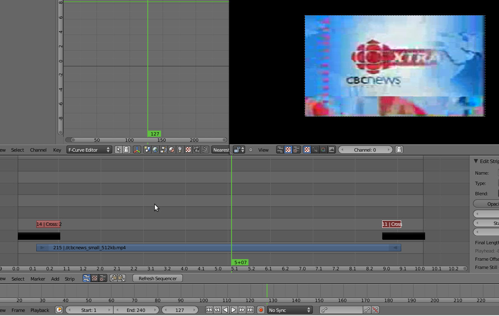7- Coloque o cursor onde desejar na linha de tempo, faça Add > Scene e escolha a Scene. Irá surgir um novo bloco de cor verde com 135 frames. Este número de frames é aquele que definiu no Start e End da Scene inicial.
8- Seleccione a Scene (bloco verde) e mude o Blend Mode para AlphaOver. A sua animação da Scene deverá agora surgir sobreposta ao clip de vídeo. Coloque o cursor (linha verde) onde deseja e faça um render (F12) para ver como irá ficar o resultado final, a janela de preview (em cima, lado direito) irá actualizar.
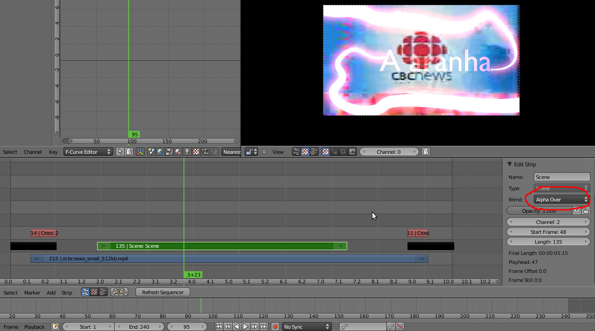9-No nosso caso, o clip de vídeo está muito claro e não deixa ver correctamente a animação. Seleccionámos o clip de vídeo e utilizámos as funcionalidades de Color Balance para escurecer um pouco o clip de vídeo e permitir que se veja melhor a animação. Vá fqzendo novos renders (F12) para poder ir actualizando o resultado na janela de preview.
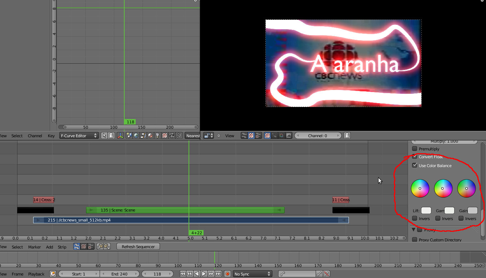E agora é tempo de renderizar. Eis algumas frames da animação na sua versão final (10 segundos, 24 FPS):
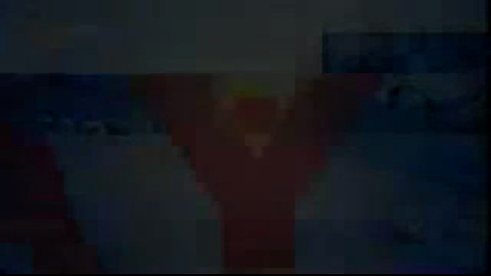 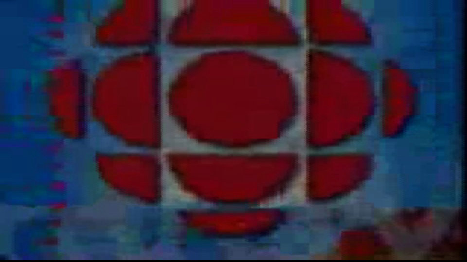 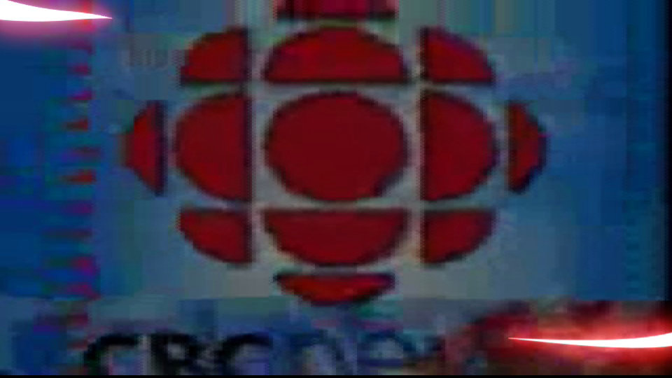 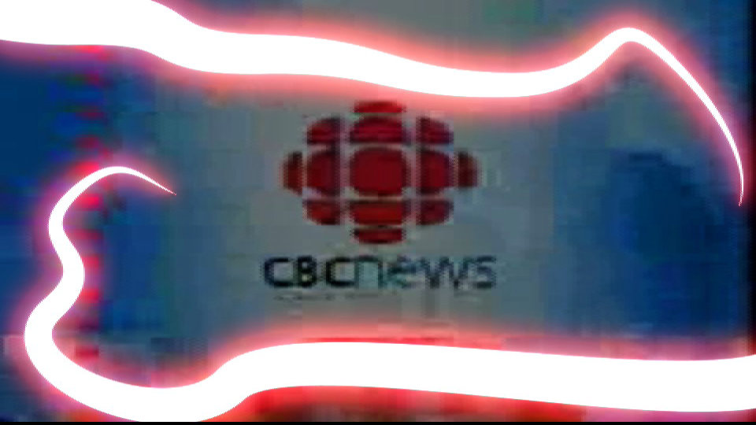 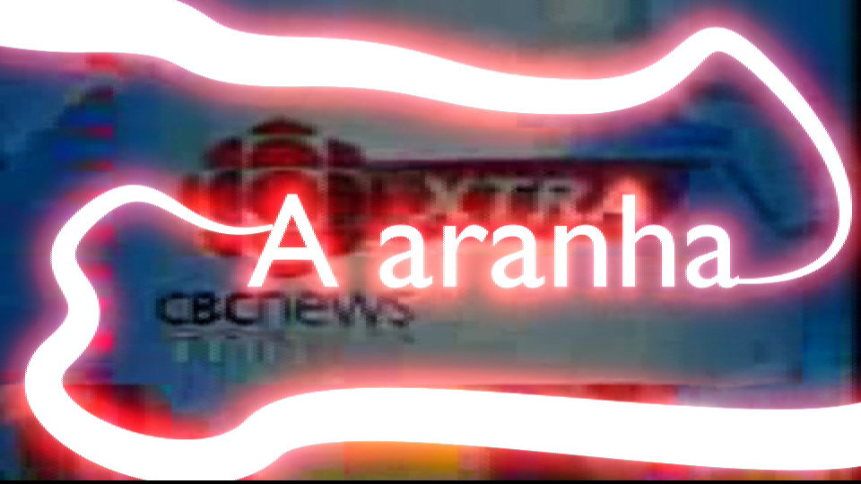
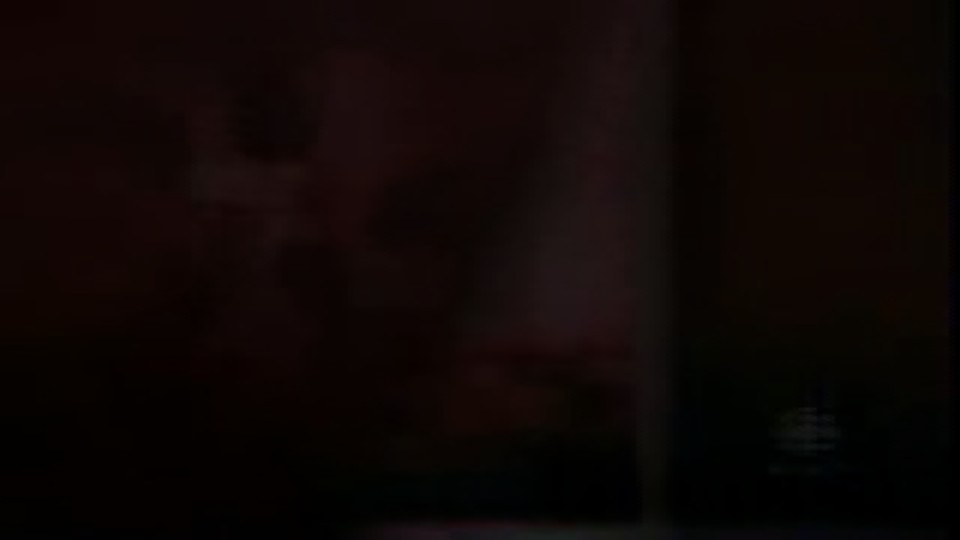
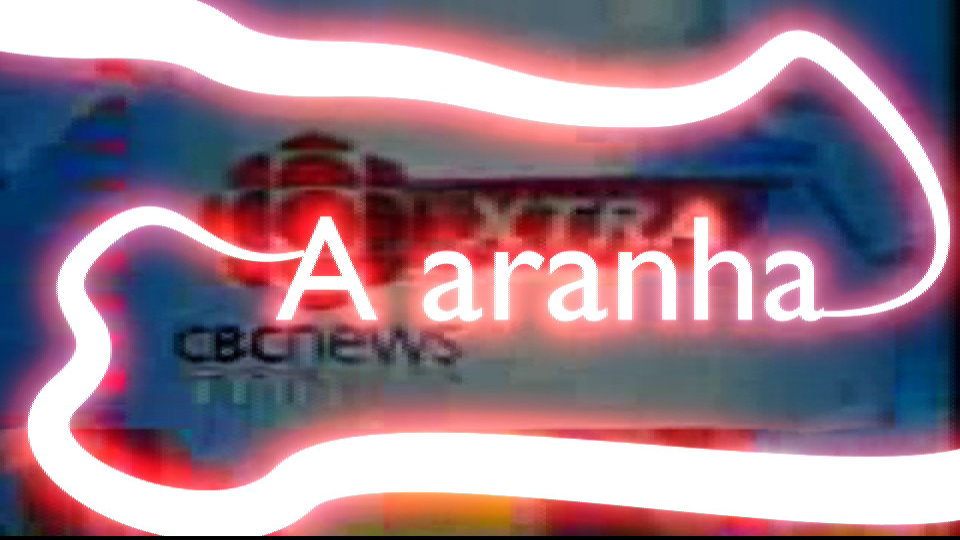
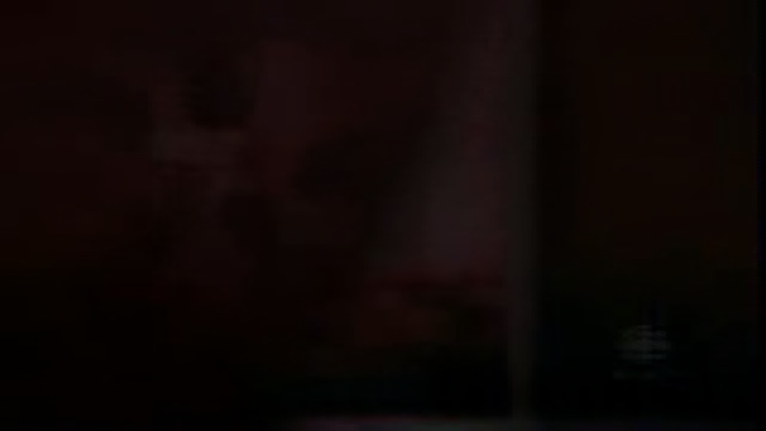
Alguns Atalhos úteis:
Shift+S: snap do clip seleccionado para o cursor
K: hard-cut do clip; Shitf+K: soft-cut do clip
H: esconder o clip seleccionado; Alt+H: mostrar clip seleccionado
Ctrl+G: criar metastrip; Alt+G: desfazer metastrip. Tab para editar metastrip.
Shift+L: trancar/proteger clip; Shift+Alt+L: destrancar/desproteger clip
Últimas recomendações:
1. Memória RAM para trabalhar com o VSE: pode (e é recomendável) aumentar a quantidade de memória disponível para o Video Sequence Editor.
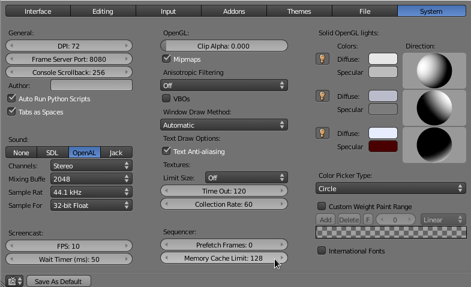2. Som: O VSE permite adicionar som e música ao seu projecto.
Depois de adicionar um ficheiro de som tem acesso a um painel de propriedades próprio. Por exemplo, pode activar a opção “Draw Waveform” que permite ver a “forma da onda” do seu ficheiro e facilita as tarefas de sincronização entre imagem e áudio.
Uma outra opção que deverá activar é a “Sync Mode”. Por pré-definição, o Blender tem a opção “No Sync” activada. Experimente os dois modos possíveis (AV-sync e Frame Dropping) para ver com qual consegue obter os melhores resultados.
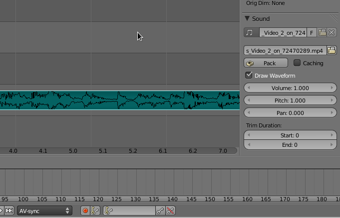